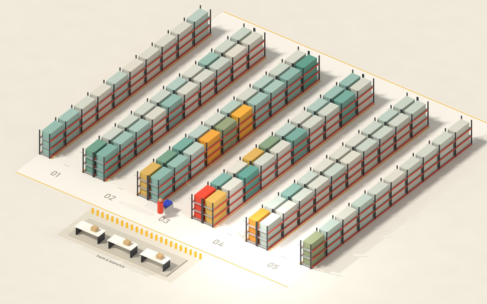
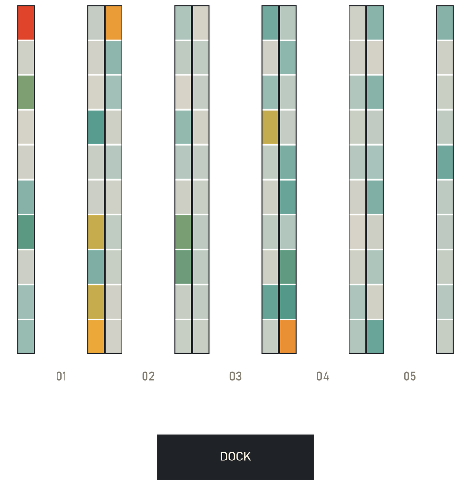
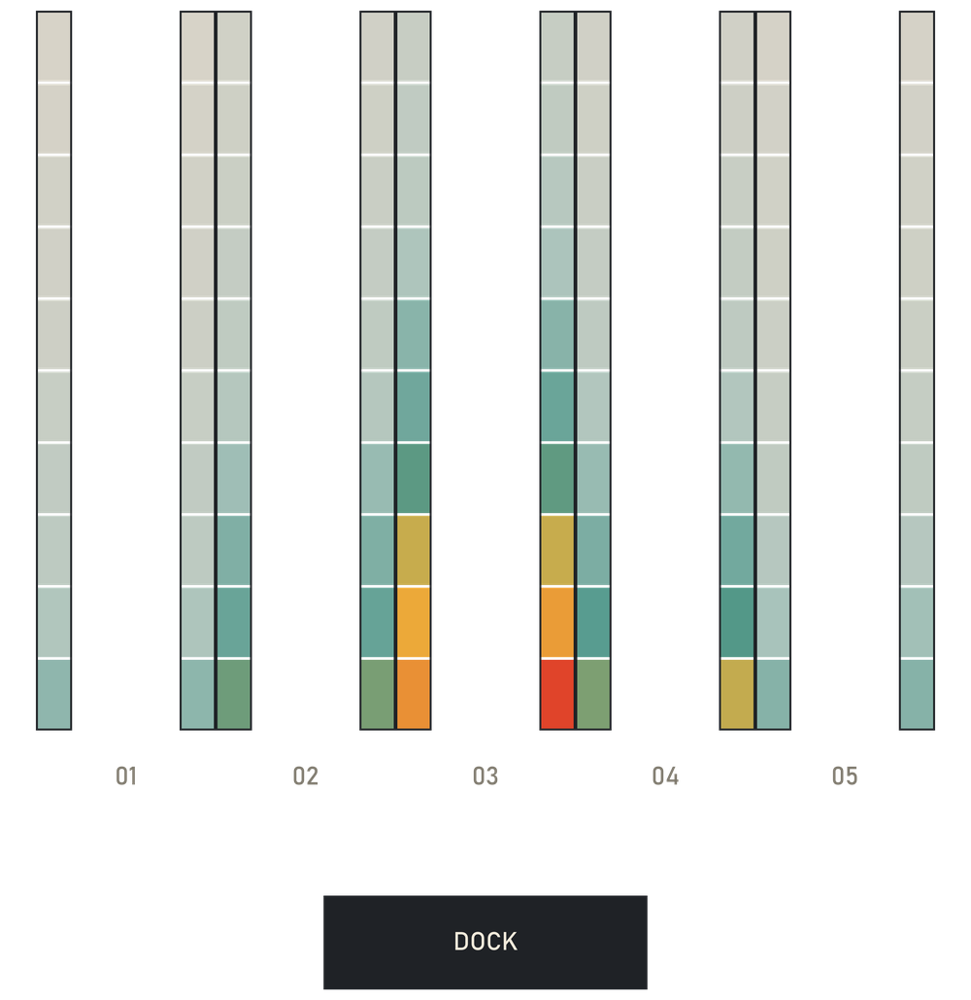
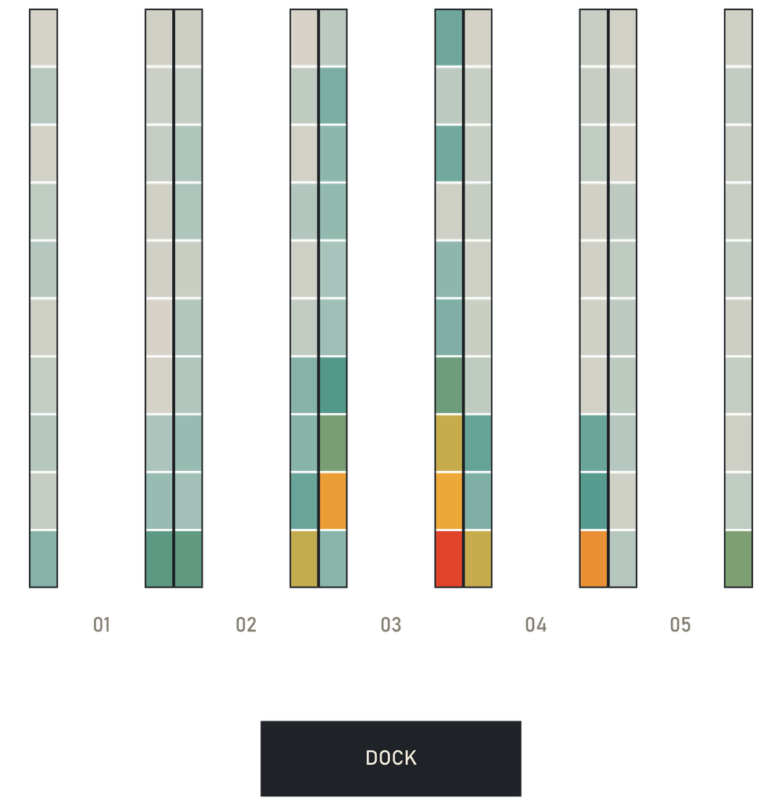
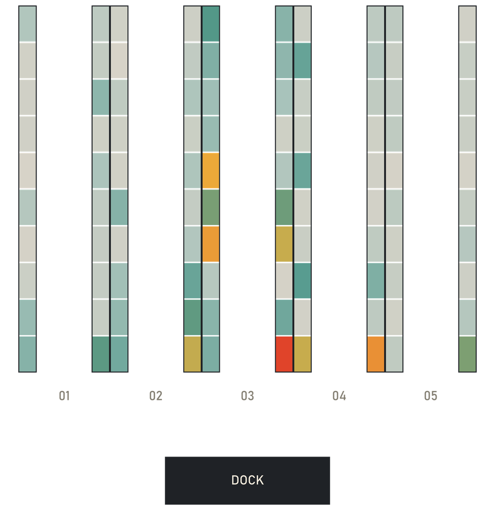
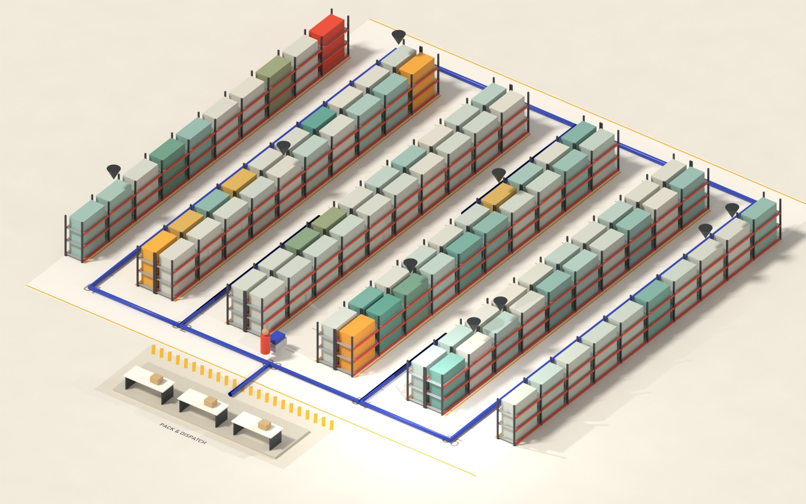
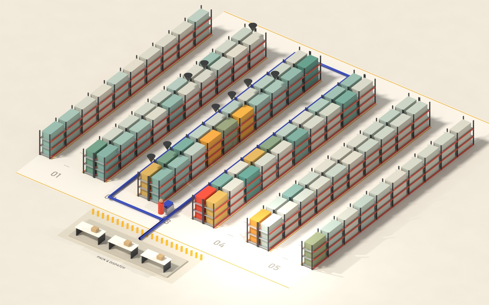
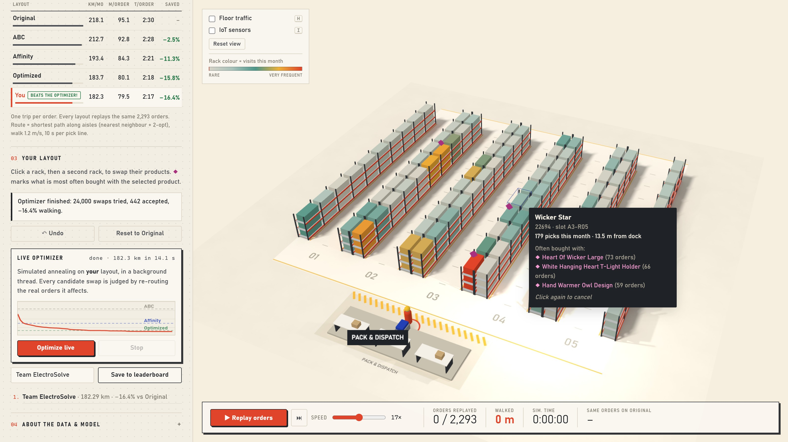

Picking floor digital twin · problem statement 4.2ELECTRO-SOLVE 2026 · project expo
PS 4.2
Picking FloorDigital Twin
A 3D twin of a warehouse picking floor, driven by 2,293 real customer orders. Re-shelve the products; it replays the same month and measures the walking saved.
2,293real orders, 16,225 pick lines
−15.8%walking, optimized layout
−68%plus smart batching
Team GitHappens · SENSE, VITRohith Krishna A K (25BCE2027) · Jaidev A (25BCE0971) Guide: Dr. Jaffino

Rack colour = visits / monthrarevery frequent
§01The problem
Pickers walk more than they pick.
53%
79 s walking71 s picking
per order · 1.2 m/s · 10 s per line
218 km a month for one picker in a 100-slot zone.
§02Real data
Online Retail II (UCI, CC BY 4.0): UK gift wholesaler, November 2010, pre-Christmas peak.
Raw order lines76,584Clean pick lines74,757Top 100 products16,225Orders replayed2,293
Top 100 = 3% of the range, 22% of picks. 7.1 lines/order.
§03How it works
01Cleanpandas removes cancellations, fees and bad rows
02Floor graph61 nodes, 64 edges; no edge crosses a rack
03Route & scorenearest neighbour + 2-opt; a month in ms
04Optimize & playsame code in Node and the browser
§04The layout ladder: same 2,293 orders, four ways to shelve

Original218.1 km
As received
Stock-code order: the baseline.

ABC−2.5%
Intuition
Most-picked nearest the dock. Orders still enter most aisles.

Affinity−11.3%
Data insight
Products bought together share an aisle.

Optimized−15.8%
Algorithm
Simulated annealing: 80,000 swaps, each judged by exact replay.
§05Same order, two floors

ORIGINAL · 5 AISLES143 m

OPTIMIZED · 2 AISLES62 m
Invoice 532964, 9 lines: one of the month’s biggest wins. On average 95.1 → 80.1 m per order.
§06Proof: unseen orders & batching
full monthunseen final week (766 orders)
ABC2.5%1.9%Affinity11.3%11.2%Optimized15.8%13.9%
Original, 1 order / trip218.1 kmBatch of 4 orders88.2 kmSmart batch + optimized70.1 km · −68%
§07Play it: can you beat the optimizer?

§08Key finding
The textbook ABC fix saves only 2.5%: orders average 7 lines, so pickers still visit most aisles. Using what is bought together saves 4–5× more, and it holds on orders the model never saw.
01Swap racks · the whole month re-scores instantly
02Live optimizer · annealing in a Web Worker; 182.3 km in 14 s
03IoT sensor mode · RFID gate, UWB cart tag, pick-to-light, barcode scans, as JSON Lines